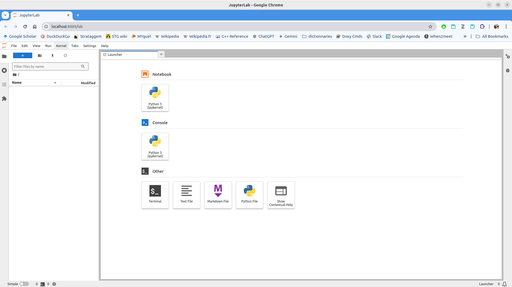

Installer les outils logiciels
Installer conda
Télécharger et installer Miniconda :
mkdir -p ~/system/python/anaconda
cd ~/system/python/anaconda
wget https://repo.anaconda.com/miniconda/Miniconda3-py312_24.9.2-0-Linux-x86_64.sh -O Miniconda3-2024.09.sh
bash Miniconda3-2024.09.sh -b -u -p miniconda312
rm Miniconda3-2024.09.sh
Ajouter le bout de code qui suit à votre fichier de configuration du shell ~/.bashrc:
1# > conda3.12 initialize >
2# !! Contents within this block are managed by 'conda init' !!
3function conda312_init {
4export CONDA312_PREFIX=$HOME/system/python/anaconda/miniconda312
5__conda312_setup="$("${CONDA312_PREFIX}/bin/conda" 'shell.bash' 'hook' 2> /dev/null)"
6export CONDA_PREFIX=$CONDA312_PREFIX
7export ANACONDA_BIN=${CONDA_PREFIX}/bin
8if [ $? -eq 0 ]; then
9 eval "$__conda312_setup"
10else
11 if [ -f "${CONDA_PREFIX}/etc/profile.d/conda.sh" ]; then
12 . "${CONDA_PREFIX}/etc/profile.d/conda.sh"
13 else
14 export PATH="${CONDA_PREFIX}/miniconda312/bin:$PATH"
15 fi
16fi
17#export LD_LIBRARY_PATH=$LD_LIBRARY_PATH:$CONDA_PREFIX/lib/
18unset __conda312_setup
19}
20# < conda3.12 initialize <
Installer OpenAI Gym (gymansium version) et Jupyter avec conda
conda312_init
conda create -n rltutorials
conda activate rltutorials
conda install -c conda-forge jupyterlab
conda install swig
pip install "gymnasium[all]"
pip install torch
Tester l’installation
En lançant JupyterLab
Soit dans la même console que celle où vous avez lancé la dernière commande (pip install gym):
jupyter lab
Soit dans une nouvelle console, lancez:
conda312_init
conda activate rltutorials
jupyter lab
Cela doit ouvrir une nouvelle fenêtre ou un nouvel onglet de navigateur avec JupyterLab, comme sur l’image ci-dessous:
{kind=link}
Dans cette fenêtre tester l’exemple suivant de gymnasium:
import gymnasium as gym
# Initialise the environment
env = gym.make("LunarLander-v3", render_mode="human")
# Reset the environment to generate the first observation
observation, info = env.reset(seed=42)
for _ in range(1000):
# this is where you would insert your policy
action = env.action_space.sample()
# step (transition) through the environment with the action
# receiving the next observation, reward and if the episode has terminated or truncated
observation, reward, terminated, truncated, info = env.step(action)
# If the episode has ended then we can reset to start a new episode
if terminated or truncated:
observation, info = env.reset()
env.close()
If there is no error, and you see the LunarLander environment, then you have successfully installed the necessary software to experiment with Reinforcement Learning using Gymnasium from farama and JupyterLab.
Note
If your system does not find gymnasium: ensure you installed it with pip (pip install « gymnasium[all] »).
Note
If you have a problem with installing gymnasium, especially problem related to the package box2d, make sure you have installed the package swig with conda (conda install swig).